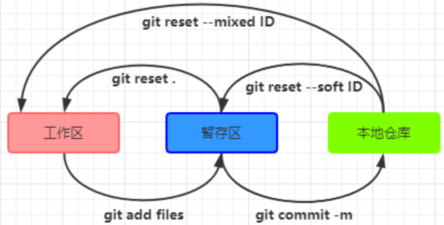
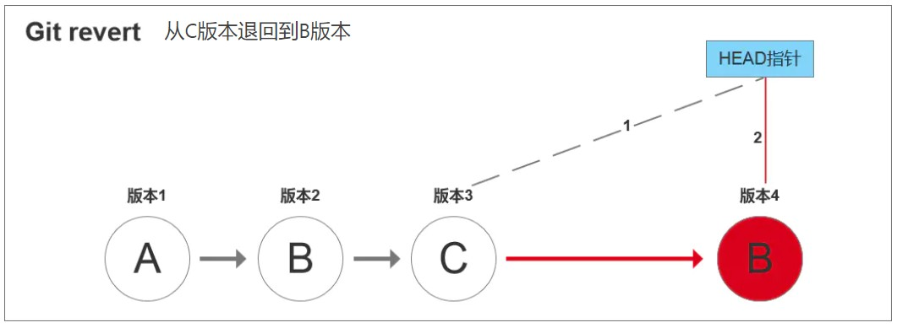
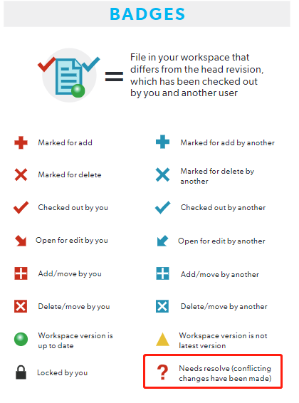
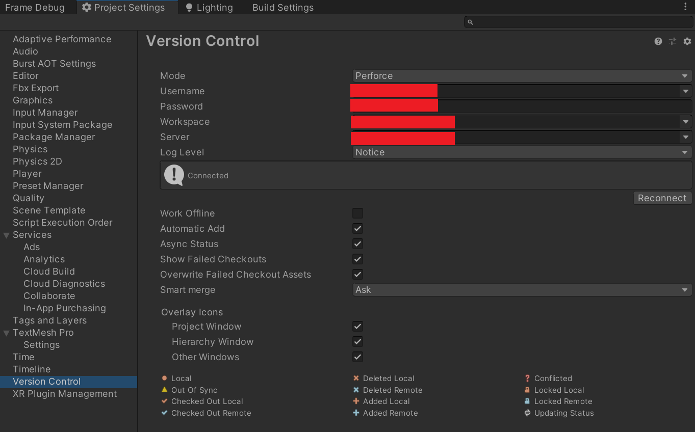

Version Control
Table of Contents
- Git
- Git Github SourceTree
- Usage
- Error Solution
- git -c diff.mnemonicprefix=false -c core.quotepath=false fetch master error: RPC failed; result=18, HTTP code = 200 fatal: The remote end hung up unexpectedly
- error cannot fork to run external filter git-lfs clean –%f
- git push 提示如下错误
- 显示 HEAD detached 后执行 git checkout master，发现之前提交的数据丢失
- fatal: unable to access 'https://github.com/xxxxx/': OpenSSL SSL_read: Connection was reset, errno 10054
- Perforce
该文档主要纪录 Git Github SourceTree 相关工具的使用。
<!– more –>
Git
Git Github SourceTree
常用命令
git
base
config manager
- gitconfig
# 查看当前仓库的git config设置 git config --list # 查看所有配置 # config 配置文件 # System .gitconfig 路径 # Windows --> TODO # OSX/Linux --> /etc/gitconfig git config --system user.name "wolfand11" git config --system -l # 查看系统配置 # Global .gitconfig 路径 # Windows --> ~/.gitconfig # OSX/Linux --> TODO git config --global user.name "wolfand11" git config --global -l # 查看用户配置 git config --global --unset user.name # 当前仓库 gitconfig 路径为 ./.git/conifg git config user.name "guodong" git config --local -l # 查看当前 git 仓库的配置 git config --local -e # 打开配置文件
- gitignore
project manager
| command | 说明 | example |
|---|---|---|
| help | 查看 git 帮助 | git help |
| help | 查看 git branch 帮助 | git help branch |
| clone | 克隆默认分支的代码 | git clone git://github.com/cocos2d/CocosBuilder.git ./CocosBuilder_origin_default |
| clone | 克隆指定分支的代码 | git clone -b develop git://github.com/cocos2d/CocosBuilder.git ./CocosBuilder_origin_develop |
| clone | 克隆指定 tag 的代码 | git clone -b v10.2.2 git@github.com:Unity-Technologies/Graphics.git ./v10.2.2 |
| init | 在本地初始化一个空仓库 | git init |
| branch | 获得本地分支信息 | git branch // Tips 前面带*号的是当前分支 |
| branch | 获得所有分支信息（包括本地和远程） | git branch -a |
| branch | 查看当前的本地分支与远程分支的关联关系 | git branch -vv |
| branch | 关联本地分支和远程分支 | git branch –set-upstream-to <remote_name>/<remote_branch_name> |
| branch | 取消本地分支和远程分支的关联 | git branch –unset-upstream |
| branch | 创建新的本地分支 | git branch new_branch_name // 以当前分支为基础创建新分支 new_branch_name |
| branch | 重命名分支 | git branch -m / -M old_name new_name |
| branch | 删除本地分支 | git branch -d / -D branch_name |
| checkout | 切换分支 | git checkout des_branch_name // 如果 des_branch_name 不存在，且远端存在同名分支则切换到 des_branch_name 并 track <remote>/<des_branch_name>(等同于下一条命令) |
| checkout | 切换分支 | git checkout -b <branch> –track <remote>/<branch> |
| checkout | 创建并切换分支 | git checkout -b new_branch_name // 以当前分支为基础创建新分支 new_branch_name，并且切换到新分支 new_branch_name |
| remote | 获得 romote 信息 | git remote (git remote -v) |
| remote | 刷新分支列表 | git remote update origin –prune |
| remote | 添加新的 remote | git remote add <remote_name> <remote_url> |
| remote | 删除一个 remote | git remote rm <remote_name> |
| remote | 重命名一个 remote | git remote rename <remote_old_name> <remote_new_name> |
| remote | 修改 remote 链接地址 | git remote set-url origin git@github.com:USERNAME/REPOSITORY.git |
| pull | fetch and merge code 并关联本地和远程分支 | git pull –set-upstream <remote_name> <remote_branch> |
| pull | fetch and merge code | git pull |
| push | 将本地代码 push 到远程分支（远程分支不存在则创建） | git push <remote_name> <local_branch>:<remote_branch> |
| push | 关联本地分支和远程分支并 push（远程分支不存在则创建） | git push –set-upstream <remote_name> <remote_branch> |
| push | 删除 remote 的一个分支 | git push <remote_name> :<remote_branch> |
| submodule | 添加子工程 | git submodule add 仓库地址 路径 |
| 删除子工程 |
content manager
| 功能 | 命令 | 示例 |
|---|---|---|
| 更新代码并自动合并 | git pull | |
| 更新代码不自动合并 | git fetch | |
| 更新代码并强制覆盖本地 | git fetch && git reset –hard origin/main | |
| 将本地修改加入 commit 列表 | git add | git add \*.org 将所有 .org 文件的修改加入到 commit 列表 |
| 取消本地内容修改 | git reset | git reset –hard HEAD |
| 回退到某个版本 | git reset –hard <commit id> | |
| 提交本地修改到分支 | git commit -m "commit msg" | |
| 取消前一次版本的修改内容 | git revert HEAD | |
| 取消某个版本的修改内容 | git revert <commit id> | |
| 重命名文件和文件夹 | git mv -f oldName newName | https://blog.csdn.net/shenwanjiang111/article/details/78776191/ |
| 查看提交记录 | git log | git log –pretty=format:"%h - %an, %ar : %s" |
- 取消修改
- 总结
- clean
git clean 的对象为 untracked files，也就是在工作区新建，但还未执行 git add 命令提交到暂存区的文件或目录
git clean -n # 干跑模式，可以列出哪些文件会被清除，但不会列出哪些目录会被清除。 git clean -f <files> # 若指定文件，则该文件被清除，若不指定文件，则所有未被提交到暂存区的文件都被清除。 git clean -df <files> <dirs> # 若指定目录，则该目录被清除，若不指定目录，则所有未被提交到暂存区的目录都被清除 git clean -ndf <files or dirs> # 干跑模式，列出哪些目录 文件会被清除
- restore
该命令有如下两种形式：
git restore –stage <file>
git restore <file>
- 文件在暂存区且未作修改的情况
使用 git restore –staged <file> 把文件从暂存区移动到工作区，即文件不被追踪； - 文件在暂存区且已经修改的情况
使用 git restore –staged <file> 把文件从暂存区移动到工作区，且不会撤销修改的内容；
使用 git restore <file> 文件仍在暂存区且会撤销文件修改的内容； - 文件在本地代码库已经修改的情况
使用 git add <file> 把文件重新放到暂存区，且保留文件的修改；
使用 git restore <file> 文件仍在本地代码库且会撤销文件的修改；
总结：
对于 git restore <file>命令，会撤销文件的修改，使文件恢复到暂存区或本地代码库（取决于文件在修改前的状态）
对于 git restore –staged <file>命令，把文件从暂存区撤回到工作区，保留文件最后一次修改的内容
- 文件在暂存区且未作修改的情况
- checkout
git checkout 的作用：同时恢复工作区和暂存区, 参数是否带有文件名时表现不一致, 不带文件名时间
- git checkout [xxx branch]
- 改变 HEAD 的指向到指定 branch
- 更新工作区的内容
- 改变 HEAD 的指向到指定 branch
- git checkout [xxx file]
- 将当前 暂存区 的文件覆盖到工作区
- 将当前 暂存区 的文件覆盖到工作区
- git checkout [xxx branch] [file]
- git checkout [xxx branch]
- rm
git rm 的作用： 删除工作区文件，并且将这次删除放入暂存区。git rm 等价于 rm xxx && git add .
git rm xxx # 作用: 删除工作区文件，并且将这次删除放入暂存区 # 注意: 要删除的文件是没有修改过的，就是说和当前版本库文件的内容相同。 git rm -f xxx # 作用: 删除工作区和暂存区文件，并且将这次删除放入暂存区。 # 注意: 要删除的文件已经修改过，就是说和当前版本库文件的内容不同。 git rm --cached xxx # 作用: 删除暂存区文件，但保留工作区的文件，并且将这次删除放入暂存区
- reset
git reset 的命令：（–hard、–soft 与–mixed；主要用于工作区、暂存区、本地仓库三个区域的文件提交撤回。Tips: –mixed 为默认方式。
git reset 的作用：是修改 HEAD 的位置，即将 HEAD 指向的位置改变为之前存在的某个版本。
git reset 的场景：如果想恢复到之前某个提交的版本，且那个版本之后提交的版本我们都不要了，就可以用这种方法。
git reset –soft xxx(commit 操作的哈希 ID) 用于将本地仓库的文件撤回暂存区的操作
git reset –mixed xxx(commit 操作的哈希 ID) 用于将本地仓库文件撤回至工作区的操作
git reset –hard xxx(commit 操作的哈希 ID) 用于将工作区、暂存区、本地仓库的所有提交的文件全都撤销（包括工作区文件，会删除）（回收站也没有哦）

- revert
git revert 的命令：-n、-m。
git revert 的作用：是一种反做命令,是用于“反做”某一个版本，以达到撤销该版本的修改的目的。
git revert 的场景：如果我们想撤销之前的某一版本，但是又想保留该目标版本后面的版本，记录下这整个版本变动流程，就可以用这种方法。
git show bd86846 # 显示commit信息 # commit bd868465569400a6b9408050643e5949e8f2b8f5 # Merge: ba25a9d 1c7036f git revert -n xxx(commit 操作的哈希 ID) # -n 表示不自动commit git revert xxx(commit 操作的哈希 ID) -m [1|2] # -m 表示revert的是一个 merge commit，-m 选项接收的参数是一个数字，数字取值为 1 和 2，也就是 commit信息中Merge信息行里面列出来的第一个commit还是第二个commit
s+attr_html: :width 512px

- 参考资料
- 总结
- merge
- dev 合并到 master 上
git checkout dev git pull git checkout master git merge dev git push -u origin master
- 将 XD merge 到 PP_URP
# 如果本地没有xd分支，则checkout xd分支到本地 # 如果本地已经有 xd 分支，则切换到本地xd分支 git checkout xd # 更新xd分支 git pull # 切换到 XD_URP_PP分支 git checkout XD_URP_PP # 更新 XD_URP_PP 分支 git pull # 将xd分支merge到XD_URP_PP git merge xd # 查看是否有冲突 merge冲突 # 如果 .unity .asset .prefab .mat等资源文件冲突，使用下面命令修复冲突 git mergetool ################################################################ # 测试修改的功能是否正常 ################################################################ # 提交merge git push # create merge request
- dev 合并到 master 上
- log
git svn
克隆 svn 仓库到本地仓库 git svn clone http://your.svn.url/svn/Demo 同步 svn 仓库到本地仓库 git svn rebase 将修改添加到本地仓库 git add/commit 将本地仓库同步到 svn 仓库 git svn dcommit (git svn dcommit 不会将本地的多个版本按时间顺序提交给 svn 服务器，而是将这些合为一个进行提交) 处理代码冲突的步骤： （1）git svn dcommit 时提示需要更新,执行 git svn rebase （2）解决冲突，执行 git add confilict.files 告知 git 已经解决冲突 （3）执行 git rebase --continue 自己对 confilict.files 的修改进入到本地仓库 （4）执行 git svn dcommit 将改动同步到 svn 仓库 为本地代码添加 git 仓库 git remote add my_origin https://github.com/wolfand11/XXX_SVN 将本地代码同步到 git 仓库 git push my_origin master:master
Usage Case
project manager
从 My_v3_1 创建 My_v4_0 分支
# 获得 My_v3_1 分支 git clone -b My_v3_1 https://github.com/wolfand11/MyCocosBuilder ./My_v4_0_MyCocosBuilder # 以 My_v3_1为基础创建 My_v4_0分支 并切换到My_v4_0 git checkout -b My_v4_0 # or 创建 My_v4_0 然后再切换到My_v4_0 git branch My_v4_0 git checkout My_v4_0 # 查看远程 remote name git remote -v # 将本地 My_v4_0分支push到远程 git push remote_name My_v4_0:My_v4_0 # 删除本地My_v3_1 分支 git branch -d My_v3_1 # Tips: 提交时发现 本地和远程分支没有关联，可以使用如下命令将两者关联 git push --set-upstream origin My_v4_0
更新自己 fork 出来的源代码
问题说明： 从 https://github.com/cocos2d/CocosBuilder fork 出来一份 CocosBuilder 的源代码 MyCocosBuilder， 过一段时间以后，原来的 CocosBuilder 的 develop 分支有更新，需要将 CocosBuilder/develop 的更新添加到 MyCocosBuilder/develop 中。 操作方法： (1)获得最新 MyCocosBuilder/develop 源代码 git clone -b develop https://github.com/wolfand11/MyCocosBuilder ./MyCocosBuilder_develop cd MyCocosBuilder git submodule update --init --recursive (2)添加新的远程库 执行命令 git remote add real_origin https://github.com/cocos2d/CocosBuilder (3)获得 real_origin/develop git fetch real_origin develop (4)Merge 修改到本地代码 git merge real_origin/develop (5)更新 origin/develop 分支 push 本地的 develop 分支到 origin/develop 分支。即 https://github.com/wolfand11/MyCocosBuilder.git 的 develop 分支
在自己 fork 出来的源代码中，以最新源码为基础创建新分支
问题说明： 从 https://github.com/cocos2d/CocosBuilder fork 出来一份 CocosBuilder 的源代码 MyCocosBuilder， 并且在 MyCocosBuilder/develop 分支的基础上添加自己的分支 v2_0，.过一段时间以后，需要添加分支 MyCocosBuilder/My_v3_0， 并且要求 My_v3_0 以最新的 CocosBuilder/develop(或者 CocosBuilder/master)为基础。 操作方法： (1)获得最新 CocosBuilder/develop 源代码 git clone -b develop git://github.com/cocos2d/CocosBuilder.git ./MyCocosBuilder/CocosBuilder_v3_0 cd MyCocosBuilder/CocosBuilder_v3_0 git submodule update --init --recursive (2)添加新的远程库 执行命令 git remote add My_v3_0 https://github.com/wolfand11/MyCocosBuilder (3)将本地 develop 分支 push 到 my_resource git push My_v3_0 develop:My_v3_0
content manager
将指定文件回滚到之前某个版本
# 查看 index.php文件的提交记录，获得版本hash git log <filename1> # checkout 出指定版本的filename1 filename2 文件 git checkout <hash> <filename1> <filename2> # commit 对filename1 filename2的修改 git commit -m "revert filename1 filename2 to xxxxxx version" # push git push
库管理方案
库管理流程
1 初始化 （1）fork lib source （2）以自己依赖的分支为基础，创建自己的分支 2 维护 方案 1：简单粗暴法 使用最新库源代码，覆盖当前自己的分支，然后 merge 变化 方案 2： 参考上面的文档：更新自己 fork 出来的源代码
项目命名 分支命名规则 CommitLog 规则
自己的代码 1、项目名称以及分支名称可以参照其他开源项目命名方案。 Fork 出来的代码 1、项目名称前面加 My。例如：MyCocosBuilder Mycocos2d-x 2、加分支时，分支的命名前加 My_。例如：My_v2_1 My_v3_0 3、commit 时，如果修改了原来源代码的，日志前加[ChangeOrigin]
Usage
submodule
## 添加submodule cd Assets/Common/ git submodule add git@github.com:wolfand11/UnityCommonUtils.git ## 子模块更新 cd Assets/Common/ git pull git add . git commit -m "update submodule" git push ## clone 带子模块的项目 git clone git@github.com:wolfand11/ShadowRendering.git git submodule update --init --recursive ### 或者 git clone project.git project3 --recursive ## 修改提交子模块 ## 删除submodule rm -rf submodule_path # 删除子模块目录及源码 vi .gitmodules # 删除项目目录下.gitmodules文件中子模块相关条目 vi .git/config # 删除配置项中子模块相关条目 rm .git/module/* # 删除模块下的子模块目录，每个子模块对应一个目录，注意只删除对应的子模块目录即可 git rm --cached 子模块名称 #
LFS
lfs 使用
# osx 安装 lfs brew install git-lfs # 初始化，加入 lfs git lfs install # initialize the git lfs project git lfs track "*.png" # track png file with lfs git add .gitattributes # record lfs track file types # 已有项目 git lfs fetch origin master git lfs pull
github LFS
目前 Github 大文件空间只有 1G，所以，还是不要使用 LFS。
https://docs.gitlab.com/ee/workflow/lfs/manage_large_binaries_with_git_lfs.html#git-lfs
gitlab LFS
sparse-checkout
# create proj dir mkdir RenderDocTools cd RenderDocTools/ # init git git init git remote add origin git@github.com:wolfand11/Crack.git git sparse-checkout init git sparse-checkout set "RenderingCrackTools/RenderDoc/" # list sparse-checkout dirs git sparse-checkout list # fetch code git pull --set-upstream origin main
https://stackoverflow.com/questions/600079/how-do-i-clone-a-subdirectory-only-of-a-git-repository
unity scene prefab merge
修改 ~/.gitconfig 文件，在其中添加如下内容：
[merge] tool = unityyamlmerge [mergetool "unityyamlmerge"] trustExitCode = false cmd = 'C:/Program Files/Unity/Hub/Editor/2020.3.8f1c1/Editor/Data/Tools/UnityYAMLMerge.exe' merge -p "$BASE" "$REMOTE" "$LOCAL" "$MERGED"
执行了 git merge 操作后，如果有场景或 prefab 有冲突，命令行直接运行 git mergetool 命令可以对冲突文件进行合并
Error Solution
git -c diff.mnemonicprefix=false -c core.quotepath=false fetch master error: RPC failed; result=18, HTTP code = 200 fatal: The remote end hung up unexpectedly
# 先执行下面命令 git clone --depth 1 <url> # 再执行下面命令 git fetch --depth=1000000 ## 对于 git version >= 1.8.3 的用户，可以使用下面命令代替上一条命令 git fetch --unshallow
error cannot fork to run external filter git-lfs clean –%f
git push 提示如下错误
Error 1
ssh: connect to host github.com port 22: Connection timed out fatal: Could not read from remote repository. Please make sure you have the correct access rights and the repository exists.
使用 git push –force 强制提交
显示 HEAD detached 后执行 git checkout master，发现之前提交的数据丢失
git commit -m "Support Shader Variant Stripping" ## 执行commit后，提示下面信息 [detached HEAD 4bf13fd] Support Shader Variant Stripping git branch -vv ## 执行git branch -vv 后提示下面信息 # * (HEAD detached from 1c5052b) 4bf13fd Support Shader Variant Stripping # master 1c5052b [origin/master] add Simple Camera Controller ## 执行 git checkout master后，再执行git branch -vv 发现detached HEAD 4bf13fd 信息消失 git checkout master git branch -vv # * master 1c5052b [origin/master] add Simple Camera Controller #### 慌乱，难道之前提交的信息丢失了？ # 执行下面命令，找回了之前的提交信息 git checkout 4bf13fd # 以 4bf13fd (HEAD detached from 1c5052b) 创建tmp分支 git branch tmp # 切换到 master git checkout master # 更新 master git pull # 将tmp merge到master git merge tmp ### 丢失掉的提交信息回来了!
fatal: unable to access 'https://github.com/xxxxx/': OpenSSL SSL_read: Connection was reset, errno 10054
产生原因：一般是这是因为服务器的 SSL 证书没有经过第三方机构的签署。使用如下命令可解决该问题
git config --global http.sslVerify "false"
Perforce
Base
基本使用流程
gui p4 客户端安装
https://www.perforce.com/downloads/helix-visual-client-p4v
文件状态图标

添加文件后提交 需要 Mark For Add，后再 Submit
删除文件后提交 需要 Mark For Delete，后再 Submit
修改文件后提交 直接 Submit 就可以了
Basic Concepts
| IDE with versioning plug-in | Other commonly used terms | Corresponding Perforce command |
| Add to source control/Perforce | Add | p4 add |
| Check out | Edit | p4 edit |
| Check in | Submit | p4 submit |
| Show differences | Diff | p4 diff |
| Get latest version | Sync, Refresh | p4 sync |
| Show history | Filelog | p4 filelog |
| Undo checkout | Revert | p4 revert |
| Remove from source control | Delete | p4 delete |
Command Line
基本使用流程
安装 p4
# osx brew install --cask perforce
配置 perforce 服务器
# 创建服务器仓库目录 /proj-server-path/P4Server # 执行下面命令开启 perforce 服务器 p4d -r /Users/bruno/server -p localhost:1666
配置工程
# 在本地创建目录 /proj-client-path/P4TestProj # 创建 P4CONFIG 文件 ## 也可以自定义 P4CONFIG 对应的文件 p4 set P4CONFIG=.p4config vim .p4config ## 添加如下内容，指定当前工程的 p4 服务器地址 P4PORT=localhost:1666 # 执行如下命令，检查是否可以连接到服务器 p4 info # 创建一个仓库， -t stream 指定了仓库类型为 stream 类型 cd /proj-client-path/P4TestProj p4 depot -t stream P4TestProj # 创建一个 stream, -t mainline 指定 stream 为主线 p4 stream -t mainline //P4TestProj/main # 创建一个 stream, -t development 指定 stream 为 development, -P 制定从哪个 stream 派生新 stream p4 stream -t development -P //P4TestProj/main //P4TestProj/branch_v2 # 查询当前的所有的 stream p4 streams # 修改 P4CONFIG 文件，添加如下内容，设置 Client 的名称 P4CLIENT=guodong_P4TestProj # -S 指定本地 workspace 绑定的 stream p4 client -S //P4TestProj/main # 配置 p4ignore vim .p4ignore ## 在 .p4ignore 文件中添加如下内容 .DS_Store .p4ignore .p4config ## 修改 P4CONFIG 文件，添加如下内容，设置 P4IGNORE P4IGNORE=.p4ignore # 查询当前的设置 p4 set # 其他常用的 P4CONFIG 配置项 P4USER P4PASSWD P4HOST P4EDITOR P4DIFF P4IGNORE
下面为配置模板:
# .p4config P4PORT=localhost:1666 P4CLIENT=my_P4TestProj P4USER=test_user P4PASSWD=test_pwd P4IGNORE=.p4ignore # .p4ignore .DS_Store .p4config .p4ignore # 设置p4config p4 set P4CONFIG=.p4config # 指定本地 workspace 绑定的 stream p4 client -S //P4TestProj/main
增删改查
# 创建一个 default changelist，将新增文件都添加到该 changelist中 p4 add * # 提交 default changelist 中的内容到服务器 p4 submit # 默认p4仓库中的文件是只读的，p4 edit 命令指定对文件进行修改 p4 edit file1.txt # 编辑文件 vim file1.txt # 提交编辑操作 p4 submit # 删除所有 .h 文件 p4 delete *.h # 提交删除操作 p4 submit # 列出所有change 提交信息 p4 changes # 查询100 编号对应的提交信息 p4 describe 100 # 同步服务器内容到本地, ... 指定同步当前目录下所有文件 p4 sync ... # Previews output of open files for add, delete, and/or edit in order to reconcile a workspace with changes made outside of Helix server. p4 status # Open files for add, delete, or edit to reconcile a workspace with changes made outside of Helix server. p4 status -A # -f 表示强制执行 p4 status -Af p4 reconcile -ead # opt files in current folder ## 指定对当前目录下的所有文件进行修改 p4 edit ... ## 指定提交当前目录下的所有文件的修改/删除/新加 p4 submit ... ## 指定同步当前目录下所有文件 p4 sync ...
FAQ
p4 查看本地 workspace 版本号和仓库版本号
vim echo_p4_version.sh #输入下面的内容 #!/bin/bash Has=`p4 cstat ...#have |grep change | awk '$3 > x { x = $3 }; END {print x} ' ` Depot=`p4 changes -m1 |head -n 1` echo "current dir has version: "$Has echo "p4 depot version : "$Depot echo ""
p4 获取指定版本的工程
- 右键点击 Workspace 中指定目录，选择 GetRevison 菜单
- Specify revision using： Changelist ： revision_number
- 取消选中 Only get revisions for files listed in changelist
清理本地修改内容
右键点击 Workspace 中指定目录，选择 Clean 菜单
Unity
Unity 工程集成 P4
Project Settings/Version Control 中进行配置。

Unity 烘焙完之后，为什么别人 unity 里面无法正常显示烘焙效果？
P4 的问题，以下两个文件的 fileType 错误，导致 P4 无法正确识别文件
xxxx.lighting
LightingData.asset
烘焙相关的文件*.lighting 以及 lightingData.asset 这样两个文件。烘焙完之后，需要在 P4 工具内选中两个文件，右键点开选项菜单，选择 Change FileType
将文件类型从 text 改成 binary，再提交。